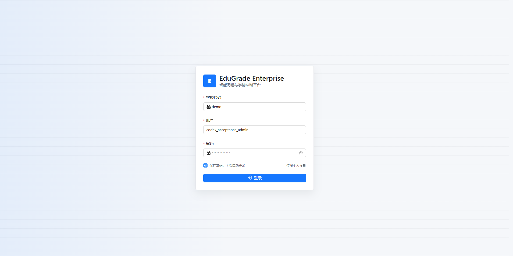
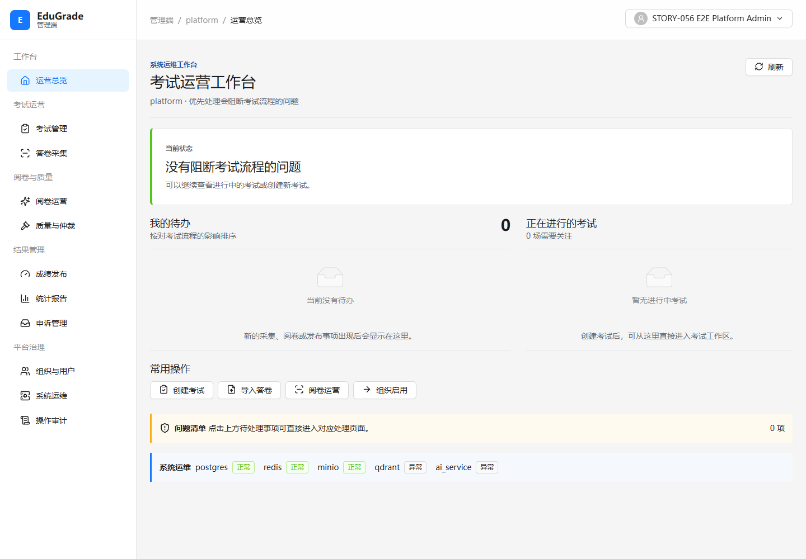
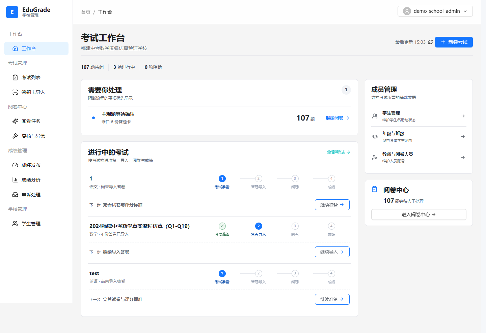
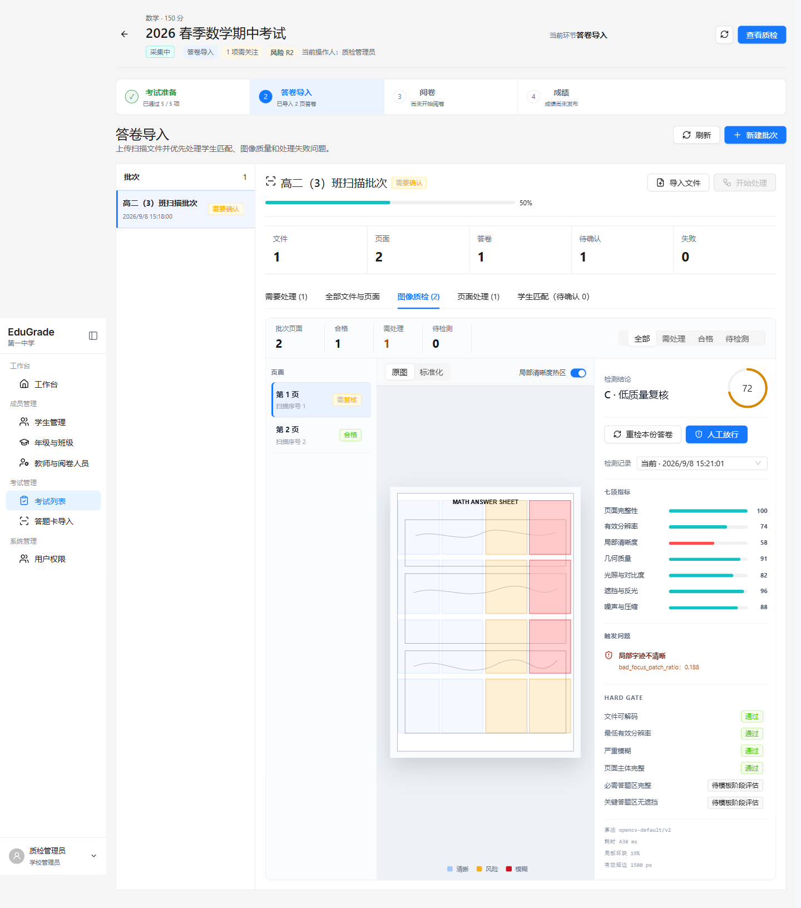
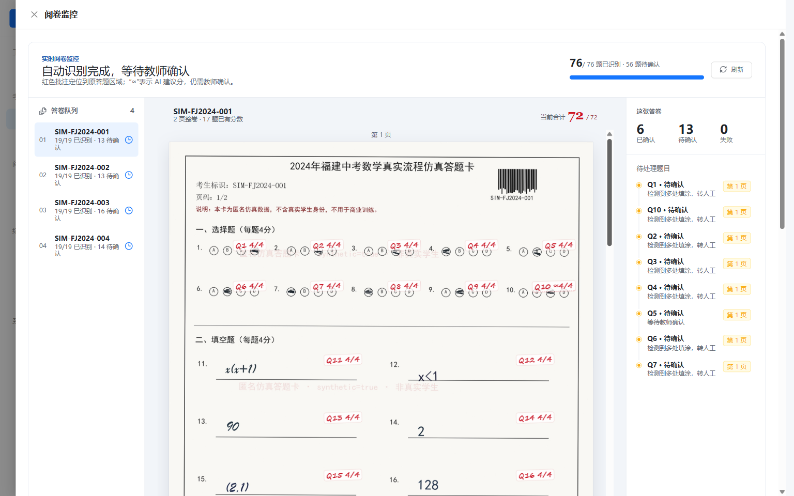
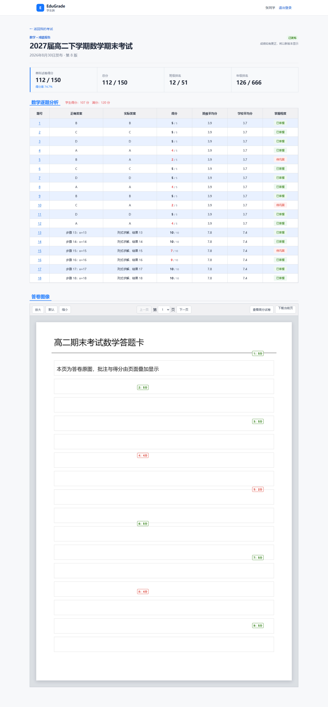
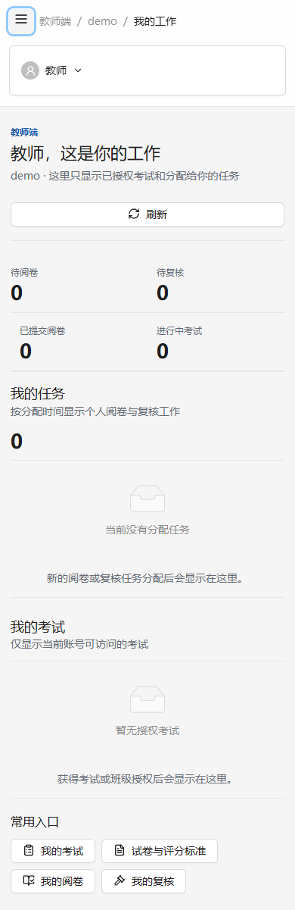

1总体结论
EduGrade 的 UI 是一套完成度较高、信息设计能力突出的企业级（B 端）后台界面。它不追求花哨视觉，而是以“让高频、高强度的考试组织与阅卷工作高效、清晰、少出错”为目标，这一定位与产品属性高度匹配。综合 UI 评级 B+（7.2/10）：功能与信息架构是强项，视觉个性（品牌识别）与局部一致性是主要提升空间。
- 风格定位准确：克制、扁平、低饱和、信息优先，符合专业阅卷/教育管理工具的专业气质，没有为“好看”牺牲效率。
- 信息架构与工作台范式成熟：“左侧队列 + 中央工作区 + 右侧详情”的三栏布局贯穿质检、阅卷等核心场景，符合专业人员心智。
- 领域驱动的色彩语义：除通用成功/警告/危险色外，专门定义了阅卷评分色板（正确/部分正确/错误/AI 建议/低置信/分歧/人工推翻），是难得的领域设计亮点。
- 数据可视化服务判断：质量分环形图、七维指标条、答卷热区、红色批注定位，都直接回答“这份答卷/这道题怎么了、要不要人工介入”。
- 主要短板：整体视觉接近“标准 AntD 模板”，品牌记忆点弱；蓝/青两套强调色、两套步骤条、多个近似红色值，局部规范不统一；缺暗色模式；关键数字未做等宽对齐。
2UI 设计评分
从视觉与交互设计专业维度评分（10 分制），侧重真实使用体验与长期一致性。
视觉美观与品牌识别
色彩系统
字体与排版
布局与信息架构
组件一致性
数据可视化
交互与反馈
可访问性/包容性
设计系统成熟度
综合 UI 评价
3色彩系统
整体采用“单一主色 + 三语义色 + 中性色”的 B 端经典结构，并为阅卷业务扩展了专用评分色板。每个语义色都配有浅底色（soft）用于标签与卡片背景，搭配成熟。
品牌与强调色
观察：主按钮与链接用蓝（#1677ff），而采集进度条、质检热区、当前环节大量使用青色（teal/cyan）。蓝与青并存，且没有明确的“何时用蓝、何时用青”的书面规范，是色彩一致性的首要隐患。
语义色（含浅底配对）
阅卷评分专用色板（领域设计亮点）
色彩层面的改进点：
- 统一强调色职责：明确“蓝=全局主动作/导航，青=采集与质检业务”，并写入设计规范；或收敛为单一强调色，避免视觉上两种“高亮”竞争注意力。
- 合并近似红色：实测出现 #c9363e / #c81424 / #d92d3a / 批注红等多个接近的红，建议归并到 danger 与 humanOverride 两个明确色值。
- 补齐暗色模式：当前令牌仅有浅色。教师长时间阅卷场景对暗色有真实需求，建议按 token 派生 dark 主题（B 端可列为 P2）。
- 核对弱对比文字：#667085、#7a8699 等次要灰字在白底与小字号下接近 WCAG AA（4.5:1）边界，密集表格中建议适当加深。
4字体与排版
使用系统字体栈（苹方 / 微软雅黑 / Noto Sans CJK），中文渲染稳妥、零外部字体加载成本；正文行距 1.6，阅读舒适。字号以 rem 定义并随“大字模式”整体放大。
- 关键数字建议等宽（tabular-nums）：分数、计数、排名等是界面的核心信息，目前用比例数字，相邻数字宽度不一、纵向不易对齐。建议对指标与数字列启用
font-variant-numeric: tabular-nums，显著提升扫描与对账效率。 - 正文 14px 偏小：在高密度后台可接受，但教育场景用户年龄跨度大，建议默认正文向 14–15px 靠拢并继续推广已有的“大字模式”。
- 层级主要靠字重与字号、对比克制：整体清晰；建议加强页面主标题与卡片标题的字重/留白对比，让“当前在哪个业务、看哪张卡”更一目了然。
- 中英文/数字混排：建议统一中西文间距与数字字体，避免同一行内中英文基线与字号观感不齐。
5布局与间距
间距采用 4 的倍数阶梯（4/8/12/16/20/24），节奏统一；桌面端以固定侧边栏 + 三栏工作台为骨架，断点在 900/1200（平板/紧凑）切换，移动端抽屉式导航。
- 三栏工作台是核心资产：队列（左）—主工作区（中）—详情/指标（右）在图像质检、阅卷监控中一致复用，专业人员无需重新学习布局。
- 核心右侧面板信息偏密：图像质检右栏同屏堆叠“质量分环形 + 七项指标 + 触发问题 + HARD GATE 门控 + 算法元信息”，认知负荷较高。建议用更明确的分组标题/分隔，或把“算法元信息”降级为可展开的次要区。
- 响应式是“自适应堆叠”而非移动端重设计：手机端可完成查看与简单操作，但阅卷/质检这类重操作在小屏效率低；建议明确移动端定位为“监看/轻处理”，重操作引导至桌面端，并放大次级图标按钮的触控区域（建议 ≥40px）。
- 留白与卡片密度整体均衡：没有大面积无意义留白；表格长内容区可进一步统一卡片内边距，减少不同页面的密度差异。
6组件视觉
组件整体“轻边框 + 圆角 6–10px + 极轻阴影”，视觉非常平、层级主要依靠边框与浅底色，克制统一。图标统一使用 lucide 线性图标（约 18px、相近描边），与整体气质一致。
观察到的组件级问题：
- “考试阶段”存在两套步骤条：学校工作台用“圆点 + 连线”（当前实心蓝、其余空心灰），图像质检用“卡片式横向步骤”（✓ / 数字、当前蓝底）。表达同一信息却有两种视觉，建议统一为一种并复用。
- 空状态插画单一：所有空场景都用同一个灰色“文件盒”线稿，在同一页面多次重复，情感化与区分度不足。建议按“无任务 / 无考试 / 无筛选结果”使用不同图示，并保留已有的“解释文字 + 引导动作”（这部分做得好）。
- 浮层层级略弱：因阴影极轻，弹窗/下拉/抽屉与背景的层级主要靠遮罩与边框区分；建议对 floating 元素使用已定义但用得较少的
floating阴影，增强“浮起”感。 - 超长内容防护：测试页中长数字串不折行、横向溢出。真实业务的长 ID / 长文本需统一换行、截断（ellipsis）或横向滚动策略，避免破坏布局。
- 按钮主次清晰：主蓝实心、次级白底描边、图标+文字组合规范；建议统一各页面图标按钮的尺寸与触控热区。
7数据可视化
这是 UI 的强项之一：可视化不追求炫技，而是直接支撑“是否需要人工介入”的决策，且与业务上下文（答卷原图、题目位置）紧密结合。
- 建议统一图表配色到 design-tokens（含语义色与阅卷色），为 recharts/ECharts 建立同一主题，避免不同页面图表色不一致。
- 补齐图表的无数据/加载/异常态与图例说明；环形分值建议标注口径（如“质量分如何计算”），增强可信度。
8可访问性与包容性
在 B 端产品中属于做得较用心的：具备“跳到主要内容”链接、全局 focus-visible 焦点轮廓、大字阅读模式、reduced-motion 降级，以及主区域 tabIndex。
- 自定义图片查看器 / 全局快捷键：需保证可聚焦、具 aria-label 与等价键盘路径，快捷键避免与浏览器/读屏冲突并可查看/关闭。
- 错误与状态不仅靠颜色：当前已配合 Alert 与文字，方向正确；状态标签建议同时带图标或文字，避免色觉障碍用户无法区分。
- 路由切换的焦点管理：可在进入新页面时把焦点移至主区域并朗读页面标题（已有 #main-workspace 基础）。
- 对比度：系统核对次要文字与图表细线在白底达到 WCAG AA。
9设计系统成熟度
已具备设计令牌分层（颜色 / 间距 / 圆角 / 阴影 / 动效 / 字号 / 层级 / 断点 / 阅卷色）与共享 UI 包，底座完整；但“令牌—组件—规范文档”的闭环尚未完全打通。
- 令牌文件存在编码损坏：packages/design-tokens/src/grading.ts、reading.ts 的中文注释呈现乱码（如“鎸夎瘎鍒嗚...”），设计系统源文件本身需要修复编码，否则规范无法被阅读。
- 双令牌映射：--eg-* 自定义令牌与 antd 主题 token 各维护一套、两处 ConfigProvider（main.tsx 与 AppLayout），建议由 design-tokens 单点生成 antd 主题，减少不一致。
- 共享 UI 包利用率低：13 个共享组件全仓仅约 6 处使用（详见此前代码审查报告），建议“要么推广、要么精简”，并补充组件用法示例与文档。
- 缺设计规范文档：建议沉淀一份面向设计/开发的 UI 规范（色彩用法、步骤条、空状态、图表、间距与密度），把当前“约定俗成”变为“有据可依”。
10UI 问题清单（汇总）
将前述发现按优先级汇总，便于排期。多数为“规范统一”类问题，改动风险低、收益直接。
| 优先级 | 问题 | 影响 / 归属 |
|---|---|---|
| P1 | 蓝 / 青两套强调色职责不清 | 注意力竞争，色彩一致性 |
| P1 | 同一“考试阶段”两套步骤条 | 组件视觉不统一 |
| P1 | 设计令牌源文件注释编码乱码 | 规范无法阅读，设计系统 |
| P1 | 主题两处 ConfigProvider / 双令牌映射 | 主题易漂移 |
| P1 | 质检右栏信息过载、分组弱 | 认知负荷，布局 |
| P2 | 品牌视觉个性弱、记忆点少 | 差异化与品牌识别 |
| P2 | 多个近似红色值未归并 | 色彩一致性 |
| P2 | 关键数字未做等宽 tabular-nums | 数字扫描/对账效率 |
| P2 | 空状态图示单一、浮层阴影过轻 | 情感化与层级 |
| P2 | 超长内容缺换行/截断防护 | 布局稳定性 |
| P2 | 移动端为缩放适配、触控热区偏小 | 移动可用性 |
| P2 | 缺暗色模式、图表主题待统一 | 长时间使用 / 一致性 |
11UI 改进路线图
- 修复令牌文件编码；主题单点收敛
- 明确蓝/青使用职责；归并近似红色
- 关键数字启用 tabular-nums
- 浮层阴影、超长内容防护
- 统一步骤条、空状态、标签
- 图表主题与无数据态统一
- 质检右栏分组减负
- 推广共享 UI；输出 UI 规范文档
- 提炼品牌视觉（登录页/主色/插画）
- 暗色模式
- 移动端“监看/轻处理”定位与触控优化
- 自定义交互键盘与 ARIA
12界面画廊（实证）
以下为本次观察的真实运行界面，配图注说明设计要点。完整分辨率截图已随报告放在 ui-design-assets/ 目录。






